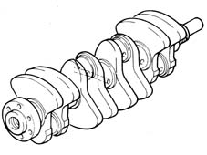
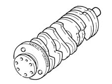

1024A crank shaft
- Path
- Descriptions > 10 ENGINE UNIT > 1024 CRANKSHAFT AND FLYWHEEL > 1024A crank shaft
- Kind
- system description
- Applies to
- all engines; all production periods
- Interactive page
- https://sloeber94.github.io/elrnDB-fMltpl/en/#/2888218
Applies to: engines: 1.6 16v; all production periods
Made from cast iron, induction hardened.
It rests on five main bearings with bearing shells graded into three sizes.
The crankshaft endfloat is adjusted by two thrust washers located in the gearbox side bearing support.
Eight counterweights arranged at 180° ensure that the crankshaft rotating masses are perfectly balanced.
A channel runs along the inside of the shaft to lubricate the main bearings and big end bearings.

Applies to: engines: 1.9 JTD 8V; all production periods
This is of cast iron, it is supported by five main bearings and its endfloat is adjusted by two thrust washers housed in the rear main bearing.
Eight counterweights ensure that the rotating masses of the crankshaft are precisely balanced.
A channel runs along the inside of the shaft to lubricate the main bearings and big end bearings.
A flywheel for the rpm sensor is fitted at the rear.
